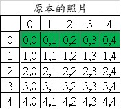
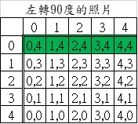
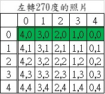
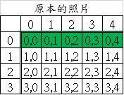
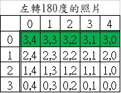

💡 此筆記為APCS 2025年10月實作題考試的題目詳解。每一題的題解都包含解題思路、C++範例程式碼。
第一題 彗星撞擊 (ZeroJudge r488.)
題目
你正在研究一個長 $R$ 寬 $C$ 的矩形區域，模擬恐龍棲息地與彗星撞擊事件。
初始地圖是 $R \times C$ 的網格（座標從 $0$ 開始編號，行座標範圍 $[0, R-1]$，列座標範圍 $[0, C-1]$），所有區域的初始地面高度均為 $D$。
地圖上有 $K$ 隻清醒的恐龍，相同座標可能有多隻恐龍。
接著，地圖將經歷 $M$ 次彗星撞擊事件。每次撞擊由中心點 $(a, b)$、撞擊邊長 $S$ 和撞擊深度 $d$ 定義。
撞擊規則：
1. 影響範圍： 每次撞擊的影響範圍是以 $(a, b)$ 為中心的邊長 $S$ 正方形區域（需與地圖邊界取交集）。
2. 暈眩與凹陷判定：
• 如果在撞擊的影響範圍內存在至少一隻清醒的恐龍：
◦ 範圍內所有清醒恐龍會變為暈眩狀態。
◦ 本次撞擊不會對該範圍造成地面凹陷。
• 否則（影響範圍內沒有清醒恐龍）：
◦ 影響範圍內所有區域的地面高度會減少 $d$。地面高度可以為負數。
請計算經歷 $M$ 次撞擊後：
1. 地圖上最高的地面高度。
2. 地圖上最低的地面高度。
3 . 保持清醒的恐龍區域數量。
輸入 / 輸出說明
| 輸入說明 | 輸出說明 |
|---|---|
| 第一行包含三個整數 $R, C, D$。($1 \le R, C, D \le 100$) 第二行包含一個整數 $K$。($0 \le K \le 100$) 接下來 $K$ 行，每行包含兩個整數 $r_i, c_i$，代表恐龍的初始座標。($0 \le r_i \le R, 0 \le c_i \le C$) 接下來一行包含一個整數 $M$。($0 \le M \le 100$) 接下來 $M$ 行，每行包含四個整數 $a_j, b_j, S_j, d_j$，代表第 $j$ 次撞擊的參數。 ($0 \le a_j < R, 0 \le b_j < C, 1 \le S_j \le 19$ 且為奇數 $,1 \le d_j \le 10$) (60 分): $R = 1$ (40 分): 無限制 |
輸出僅一行，包含三個整數，以空格分隔：最高地面高度 最低地面高度 清醒恐龍數量 |
解題思路
這題有點考驗耐心，慢慢看題目。
我用 mapp 陣列存地形高度、dinosaur 陣列存清醒的恐龍數。
要注意的是題目給 (a, b) 這樣的寫法，陣列要寫 mapp[b][a]，因為 a 是 x 座標，屬於 mapp 的行 (column)；b 是 y 座標，屬於 mapp 的列 (row)。
因為題目說 $s_j$ 是奇數，而且 C++ 如果用 s / 2 就會是無條件捨去，所以找出彗星撞擊的範圍就只需要找 $(a - s/2, b - s/2)$ 到 $(a + s/2, b + s/2)$ 的範圍內有沒有清醒的恐龍。
找出清醒的恐龍數後，如果沒有清醒的恐龍，就將 $(a - s/2, b - s/2)$ 到 $(a + s/2, b + s/2)$ 範圍內的高度減掉 $d_j$。
最後再用迴圈找出剩餘的恐龍數與最高與最低的地面高度就可以了。
範例程式碼
1 |
|
運行結果
AC (1ms, 396KB)
第二題 航空拍照圖 (ZeroJudge r489.)
題目
給定兩張灰階航空照片 $A$ 和 $B$，尺寸均為 $R \times C$。現要比對照片 $A$ 和 $B$ 的相似度，比對時允許將 照片旋轉 $0^\circ, 90^\circ, 180^\circ$ 或 $270^\circ$ 度。
如果兩張照片的原始尺寸不符，則相似度視為 $0$。在尺寸相同（設為 $R \times C$）時，相似度的定義是對應位置像素值相同個數 $S$ 佔總像素數 $R \times C$ 的百分比，計算公式為 $\lfloor \frac{S}{R \times C} \times 100 \rfloor$。輸出這兩張照片經過旋轉之後最高的相似度百分比，結果必須無條件捨去。
輸入 / 輸出說明
| 輸入說明 | 輸出說明 |
|---|---|
| 第一行有兩個數字 $R$ 和 $C$ $(1 \le R, C \le 200)$，代表照片的行數和列數。接下來是第一張圖 $A$，有 $R$ 行，每行有 $C$ 個數字。最後是第二張圖 $B$，有 $R$ 行，每行有 $C$ 個數字。數值介於 $0$ 到 $255$。 (60 分): $R = 1$ (40 分): 無限制 |
輸出兩張照片的相似度百分比。 |
解題思路
這題可以轉兩張圖，A 跟 B 都可以轉，但其實只需要轉一個就好，我是 A 不轉、B 轉
因為假設 A 轉 90 度、B 不轉就等於 A 不轉、B 轉 270 度；A 轉 270 度、B 轉 90 度就等於 A 不轉、B 轉 180 度等等。所以 A 不需要轉就可以比對全部的組合。
那這題的問題就是 B 轉 90 度、180 度、270 度要怎麼表示。
我用圖片表示：
<註解> 其實你們也可以用另一個陣列存，然後一直轉 90 度去比，這樣做的優點是不用考慮三種情況，比較不容易錯，也比較容易 debug，留給你們練習



我們先看轉 90 度、270 度，因為這兩個必須在 R 等於 C 的時候才可以對比，因此比較容易看。
我們都看第一列 (綠色標示的地方)，可以觀察到：
1. 轉 90 度
在原本的列 i = 0 的位置，轉了之後的 B 是行固定在 4，也就是新的行對應的是受舊的列控制，也就是 B[?][R-i-1]。
接著看原本的列 i = 0 的時候，原本的行 j 改變的時候，新的列跟著變，從 j = 0 對應到新的 0、j = 1 對應到新的 1等等，結合剛剛得到的 B[?][R-i-1]，轉 90 度就是 B[j][R-i-1]。
2. 轉 270 度
其實這也可以看成另一邊的轉 90 度。
在原本的列 i = 0 的位置，轉了之後的 B 是行固定在 0，一樣的道理，是新的行對應的是受舊的列控制，也就是 B[?][i]。
接著看原本的列 i = 0 的時候，原本的行 j 改變的時候，新的列跟著變，從 j = 0 對應到新的 4、j = 1 對應到新的 3等等，可以看出是 R-j-1，結合剛剛得到的 B[?][i]，轉 270 度就是 B[R-j-1][i]。
接著我們看 B 轉 180 度的情況，因為這兩個 R 不一定等於 C，所以要小心，上面轉 90 度、270 度的時候，R 寫成 C 是一樣的，但這邊不一樣。


這邊一樣看第一列 (綠色標示的地方)，可以觀察到：
在原本的列 i = 0 的位置，轉了之後的 B 是列固定在 3，也就是新的列對應的是受舊的列控制，也就是 B[R-i-1][?]。
接著看原本的列 i = 0 的時候，原本的行 j 改變的時候，新的行跟著變，從 j = 0 對應到新的 4、j = 1 對應到新的 3 等等，結合剛剛得到的 B[R-i-1][?]，轉 180 度就是 B[R-i-1][C-j-1]。<註解> 其實你們也可以用另一個陣列存，然後一直轉 90 度去比，這樣做的優點是不用考慮三種情況，比較不容易錯，也比較容易 debug，留給你們練習
範例程式碼
1 |
|
運行結果
AC (3ms, 632KB)
第三題 商品包裝地 (ZeroJudge r490.)
題目
給定 $N$ 筆長度為 13 的商品條碼。條碼前 3 碼為產地，第 13 碼為檢驗碼 $C$。
令 $S_{odd}$ 為條碼前 12 位中奇數位（位置 1,3,…,11）的總和。
令 $S_{even}$ 為條碼前 12 位中偶數位（位置 2,4,…,12）的總和。
若一個條碼滿足以下條件則視為合法：
$(S_{odd}+3 \times S_{even}) \bmod 10 + C = 0$ 或 $10$
請統計所有合法條碼中最多的產地（前 $3$ 碼）及其對應數量。
保證答案唯一，且至少有一組有效條碼。
輸入 / 輸出說明
| 輸入說明 | 輸出說明 |
|---|---|
| 輸入的第一行是一個整數 $N$ ( $1 \le N \le 100$ )。 接下來的 $N$ 行，每行是一個長度為 $13$ 的商品條碼字串。 | 輸出包含一行，為出現次數最多合法條碼的產地（ $3$ 位字串）和其對應的數量，兩者之間以一個空格隔開。 |
解題思路
老實說我覺得這題好像比上一題簡單一點。
這題其實只需要用陣列就可以了，不需要用 map，因為產地代碼只有 3 位，這樣就是 000 ~ 999，那我就設一個 num[1000] 去存就可以了。
那我們就用 for(j=0;j<12;j=j+2) 迴圈去跑條碼 s 索引是 0 ~ 11 (第 1 位 ~ 第 12 位) 的狀況，那 j = j + 2 代表他是 j = 0, 2, 4, 6, 8, 10，我們每次就把 s[j] 加到 s_odd、s[j+1] 加到 s_even 就可以了 (這邊要注意，索引 0 是第 1 位，所以 j 每次加 2 都是在奇數位喔)。
最後記得判斷 < 10 的時候要補 00，10 ~ 99 之間的時候要補 0。
範例程式碼
1 |
|
運行結果
AC (1ms, 332KB)
查看更多資訊請至：https://www.tseng-school.com/